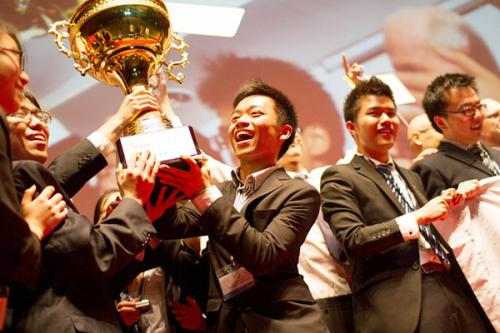

科研团队
团队建设选人最重要。理念是根本，价值观、名利观的相同是团队建设一个关键的根本性因素，对做得好、做得长久来说非常重要。在理念相同的情况下，性格包容是第二个重要点。性格可以不同，也应该是不同的。但是性格的包容是能够长久工作的保证。在这两个基础上，我认为有三个“区别”是我们需要关注的：一是学术方向的区别。在团队建设的时候，应该根据团队学术方向的需求早点进行学术布局。我们团队在建设的时候，我是从事半导体硅材料的，我们设计了纳米硅、太阳能和微电子硅材料等不同的学术方向，在建设的时候新进入的年轻人在不同的学术方向上发展，因此在五到十年的成长之后，他们各自有了比较好的学术发展空间，为团队的成长和壮大提供了基础。二是年龄的区别。引进培养人才时要注意年龄的区别和区隔，否则等他们成长到一定程度，去竞争教授或者是“优青”、“杰青”的时候会碰到困难。三是水平的区别。团队建设需要梯队，梯队的合理需要不同方面的人才。所以选人是团队建设中最重要的。
团队建设资源是基础。创造条件满足团队成员的诉求，是一个团队能够长久发展的重要保证。团队建设时，通常会从团队负责人或者团队大局的方向去考虑问题，较少从团队成员的角度去考虑问题。其实我们应更多地考虑，团队成员未来要加入团队有什么好处，对他们的发展有什么帮助。所以作为团队负责人或者团队应该能够提供更多的实验空间、更好的实验条件、更多的研究经费、更多的研究生资源、更多的学术资源，才能把年轻的老师紧紧地吸引在科研团队上。
最后，关于团队建设我给学校提几个小建议：第一，学校的创新团队经费给创新团队工作提供了很好的帮助，希望能进一步简政放权，团队的经费由团队负责人负责。第二，学校鼓励相近的研究团队组成虚拟或松散的团队，但实际工作中很多老师、特别是年轻的副教授没有形成团队，希望能形成由几个教授和副教授组成一个松散的团队，围绕着一个方向共同攻关，以增加他们在国内学术环境下的学术竞争力，也增加浙江大学在某个方向上的学术成就。最后，建议学校能形成宽容团队建设的一种文化。团队建设有成功，有失败，好就在一起，不好也能分开，独立来发展，聚散两相宜。